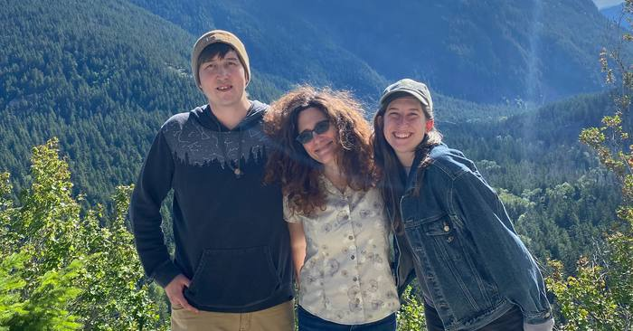
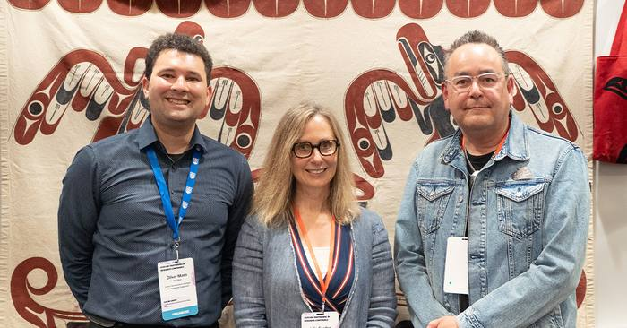
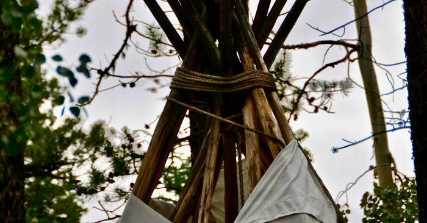
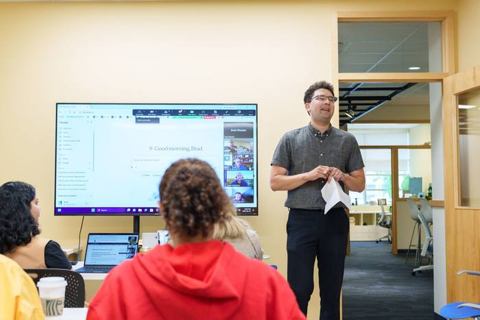
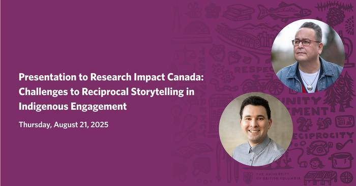

Oliver Mann
I am a communications strategist
Featured Case Studies
View more case studies →Storytelling
View more stories →Research & Indigenous Engagement
View more →MA Research
Ethical, Equity-Driven Storytelling in Institutional Communications
During my MA in Professional Communications at Royal Roads University, I developed frameworks for ethical, equity-driven storytelling in institutional communications, advocating for Indigenous-led storytelling and decolonizing communication practices. This research continues to shape how I approach community and Indigenous engagement work today.

Podcast · Nov 2025 ↗
How the Nuxalk Nation Is Working with UBC's Museum of Anthropology to Host the First-Ever Exhibit of Their People

Podcast · Jul 2025 ↗
Reciprocal Storytelling in Community-Based and Indigenous-Led Research

Podcast · Jan 2025 ↗
Children of the Taku Society and UBCO Partner to Document Language Reclamation and Resilience
Speaking & Leadership
View more →
How Innovation UBC Staff Are Using AI, Innovation UBC Lunch and Learn
Two use cases: accelerating the monthly newsletter with Asana and a custom Claude skill, and producing audiobooks with Adobe Podcast.
Ceremony and Safety in Indigenous Events, and the State of Indigenous Engagement in Canada
Presentation to Community Campus Engage Canada, with Derek Thompson, Director of Indigenous Engagement, UBC Faculty of Medicine.

Challenges to Reciprocal Storytelling in Indigenous Engagement
Presentation to Research Impact Canada.